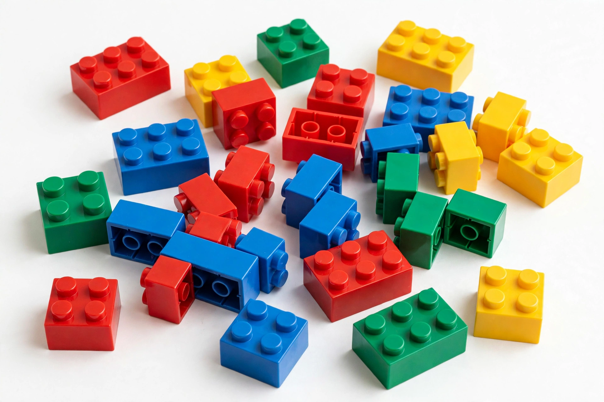

| Trade name | Lego |
|---|---|
| Industry | Toys |
| Founded | 10 August 1932; Billund, Denmark |
| Founder | Ole Kirk Christiansen |
| Headquarters | Billund, Denmark |
| Key people | Niels B. Christiansen (CEO) |
| Products | Lego construction toys |
| Owner | Kirkbi A/S (75%), Lego Foundation (25%) |
The Lego Group (formally Lego A/S) is a Danish construction toy production company based in Billund, Denmark. It manufactures Lego-branded toys, consisting mostly of interlocking plastic bricks. The company also operates the Legoland theme parks and retail stores worldwide, and since 2015 it has ranked as the world's largest toy company by revenue.
The company was founded in 1932 by carpenter Ole Kirk Christiansen, who began making wooden toys in his workshop. The name "Lego" derives from the Danish phrase leg godt, meaning "play well". In 1947 the company began producing plastic toys, and in 1949 it introduced an early version of the interlocking brick. The modern brick design, with hollow tubes underneath for clutch power, was patented on 28 January 1958 by Ole Kirk's son Godtfred Kirk Christiansen.
Under third-generation owner Kjeld Kirk Kristiansen, Lego expanded into themed sets, licensed properties and the minifigure, introduced in 1978. By 2003, however, the company was close to bankruptcy after over-expansion into video games, clothing and theme parks. CEO Jørgen Vig Knudstorp, appointed in 2004, refocused the business on the core brick and licensed lines such as Lego Star Wars, driving a celebrated turnaround. Successful media ventures followed, including The Lego Movie (2014).
Lego sets are sold under themes including City, Technic, Creator, Duplo (for young children, with larger bricks), Friends, Ninjago and licensed lines for Star Wars, Harry Potter and Marvel. All elements are manufactured to tolerances of a few micrometres so that bricks from different decades remain compatible.
The company has committed to replacing its ABS plastic with sustainable materials and has prototyped bricks made from recycled PET plastic, alongside investments in offshore wind energy through its parent Kirkbi.